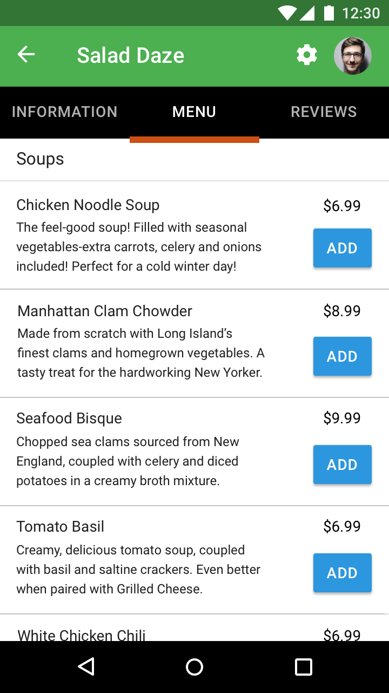

Summary
I was tasked with designing a mobile food truck application for Android that followed the guidelines of Material Design. This app would have accurate and detailed information on trucks in the New York Metro area, allowing users to find food trucks near them, view a menu, select items for purchase, and checkout.
The Problem
There appear to be several problems keeping the most popular food truck apps from being as good as they could be. People will often choose a food truck using their app of choice, then they will head to the food truck and find that it is either closed or not at the listed location, contrasting the information listed on the app. Other apps that have multiple purposes beyond locating food trucks-such as Google Maps and Yelp-don’t list pricing, have incomplete menus and/or don’t list menu options at all. Finally, not all apps allow consumers to read reviews, which would help them to avoid establishments that are less reputable.
The Solution
The WheelMeals app would allow the user to view nearby trucks by zip code in either a list or a map display view, complete with accurate hours of operation and full menus when possible. After selecting a truck, the user would be able to read reviews written by other customers, and be able to write their own reviews. The app would also give the user the ability to customize and place orders through the app, tip their server at checkout and display an estimated pickup time with directions to the truck after completing their order. Returning users would be able to view their recent transactions, quickly reorder a previous order and edit their user and payment information.
VIEW INVISION PROTOTYPEUser Survey
Before beginning to design the WheelMeals application, I needed to create a survey and analyze the responses to see where the market stands now, learn more about what is frustrating food truck app users (or stopping potential users from utilizing one) and then create an app that would rectify these
shortcomings.
The results of the user survey indicated that:
65% of respondents were between ages 25-34. This demographic would become the target audience for subsequent research and user testing.
75% of respondents eat out at least once a week, with only a quarter of those surveyed reporting that they only eat out once a month or less.
70% use the internet to eat out often, if not all the time.
75% of users prefer to place orders in advance.
(70%) often read reviews and ratings of a place beforehand if they’ve never been before.
Four people (20%) “sometimes” leave reviews.
Only two (10%) report that they often leave reviews for place they eat at.
Overwhelmingly, 90% of those surveyed will use either social media or an app to find a place to eat.
70% stated that they would use a food truck app to find new things and places to eat.
Users reported that the most common positive aspects of current food truck apps are that they are “easy to use, offer photos to help customers visualize what they can order and are convenient overall.”
Users reported that the most frustrating things about the current apps they use are that they have inaccurate and/or incomplete information about many vendors. In some cases, apps do not even list all the local vendors in the area, making them difficult to find some trucks. Three respondents who do not currently use a food truck app noted that if they had access to one near their location which offered accurate, up-to-date info, they would be likely to try it. They also noted that it was important to have full menus available as well.
It clearly seemed that users would gladly use a food truck app if it offered complete, up-to-date information on a truck’s hours and location. The chances would increase significantly if the app offered full menus with pricing as well.
User Personas

Nick, 29, is often eating on the go, so when he chooses a truck to eat at, it’s very important that the app he uses lists the correct hours of operation and correct location for the truck.
Victoria, 35, a Marketing Researcher in Manhattan, likes to find new places often, as she tends to get bored with the same options over time. She stresses that it is very important to find “clean and well-maintained” establishments that have “good reviews” and can have an order prepared quickly.
Kevin, 27, is a Sales Manager in Manhattan is looking to find an app that would allow him to save his favorite trucks and see and/or reorder his previous transactions.
Karine, 66, finds that the existing crop of food truck apps are “difficult to navigate.” Her common frustrations are that the apps she uses (Follow That Food Truck and Roaming Hunger) do not always list complete pricing and/or the correct hours of operation.
User Stories
After creating user personas and analyzing survey results, I developed a list of user stories for new and returning users of the WheelMeals app. After combing through the list, I identified the stories that were necessary for an MVP-these are highlighted in green-and the stories that could be explored in future iterations-these are listed in red.
New User Stories
Returning User Stories
User Flows
Next, I designed user flows for the key navigations throughout the app. The five fleshed-out user flows illustrated how a new user would sign in, how a returning user would sign in, how to search for trucks by zip code, how a user would place an order and how a returning user would view previous transactions, as well as reorder a previous order. I also created a site map that would show the overall flow of the app. The greatest change that would come in the finalized version of the app was that-while you could still create an account using Facebook or Twitter-the “social aspect” that allowed you to take photos of food/trucks and see where your friends were eating would be left out. I decided after speaking with my mentor, Chris, that this was not necessary for a minimum viable product and could be explored upon a second iteration.

Competitive Analysis
Before beginning to design the WheelMeals application, I needed to survey the landscape to find out what the strengths and weaknesses of the competition were. Roaming Hunger, Follow That Food Truck and Kater are all free for all users and available for Android and iOS.
Roaming Hunger:
Has very effective social media integration with Facebook and Twitter, allowing you to share content and tweet to followers within the app.
It is the most popular of the three I surveyed, thus representing the greatest threat to WheelMeals.
Roaming Hunger’s main weaknesses are that it does not list full menus, does not allow you to place orders in the app and lacks the expansive list of trucks featured by the other two competitors surveyed, thus presenting an opportunity for WheelMeals to capitalize on.
Follow That Food Truck:
Recommends favorite items and trucks based on user reviews-an exciting feature that the competition does not offer at this time.
The greatest threat that Follow That Food Truck poses to WheelMeals is that our minimum viable product does not offer these kind of personalized recommendations.
WheelMeals has the opportunity to present itself as a more reliable alternative to Follow That Food Truck if we can capitalize on this app’s inability to correctly list the hours and locations of all active trucks.
Kater:
is a newcomer to the food truck app space and provides promo codes to entice you to switch from another food truck app.
Kater also allows consumers to order ahead, pick up orders and has a reservation service if the truck you choose has tables to sit at.
Kater’s greatest weakness is that it’s location services integration is very poor at the present time.
Multiple reviewers state that the app picks up their location as being hundreds of miles away from where they actually are, causing the user to have to take extra unnecessary steps to input their location. This is a clear opportunity for WheelMeals to capitalize on.
Kater should be taken seriously-it’s two greatest strengths are a strong social media presence and blog detailing some of the finest local food trucks. The WheelMeals MVP does not account for a blog or a reservation/table service, so that would have to be looked at in a future iteration.
Branding/Style Guide
For the logo, I designed a simple truck (seen above, left,) with WheelMeals lettering in Panton (Bold, size 24 by default.) I initially had a great deal of line work, with extra windows on the front door and borders around the door and rear window, but I simplified the design after a few rounds of user feedback. Multiple users reported this initial iteration was cramping the logo and that it did not translate well when shrunk to smaller sizes. After shrinking it down, I removed the window on the door and the mudflaps around the wheels (seen above, right.)
In designing the brand identity for WheelMeals, I chose a color scheme that would evoke the emotions that I wanted to convey. The color green (#4CAF50) is intended to evoke a sense of hope, health and adventure-illustrated in the user’s journey to find a new place to eat that they will hopefully enjoy. I also chose green because it is considered to be one of the most restful and relaxing colors for the eye to view. This green is coupled with black (#FFFFFF,) a formal, dignified and sophisticated color that exudes elegance. I want the user to feel that they are using a high-quality application that is as well-designed as it is functional. Finally, I chose a light blue color (#2C97DE) that serves as the action color, as the user taps on buttons of this color to progress to the next steps in their journey through the app. The additional colors used were #000000 (for readable text) and a light gray (#7E7E7E) that would serve as the default button color until all forms are filled in, at which point the color would switch to light blue.
Low Fidelity Wireframes
Next, I began designing the low fidelity wireframes for WheelMeals. There were a few key changes that would be made from this initial set of wireframes as I moved forward to the design that you see today:
A) The initial Sign Up page was much more crowded, so I simplified that by removing the social sign-up options after receiving feedback from Chris, the Design Director at Bloc.
B) The first change can be seen on the “Map View” page-The final version of the WheelMeals app would display nearby trucks in a card view that popped up after touching a truck, as opposed to having open “display bubbles” at all times. This change was made after I received feedback from my peers in Bloc’s Designer Track program who noted the original mockup did not follow Material Design guidelines.
C) The second change was to add the hours of operation to each truck in list and card view displays, satisfying a requirement from the gathered user stories.
D) The initial low fidelity wireframe did not account for an image of each menu item on the menu pages-this would be changed in the final version.
E) The final “Review” and “Add Credit Card” input fields on their respective pages were changed from a text box to a bold line that would expand as more text was entered, as we see in Material Design guidelines.
High Fidelity Wireframes
As I began to create high fidelity wireframes in Sketch, I fleshed out a few design ideas to enhance the app’s UI:
A) I started by adding a background image on the Sign Up/Sign In/Forgot Password pages. It was initially much brighter, but after receiving feedback from my peers in Bloc’s mentorship program, I lowered the hue, saturation, brightness and contrast so that the text on the page would be more readable.
B) I also created a separate call to action color, #2C97DE, as subsequent user testing proved this to be a much popular choice in contrast with the primary green. 80% of users chose this blue color over the green color as their preferred color of choice for the call to action button color, as it “stood out more” and “helped to avoid confusion” on what action the user should take at certain points throughout the navigation of the app.”
C) On the Map View page, I replaced the dropped pins on the map page with trucks to help reinforce why you would click where these are located and what you could expect to happen after you click. After clicking on a truck, the color of the truck will change to the call-to-action blue color and a card view with more information on the truck will pop up. This change was made at the suggestion of my mentor, Chris.


D) The Truck View page also underwent some changes, as preference testing would later confirm that users preferred a caret over a select button to guide them to the truck of their choice. The 70% of users who preferred the chevron consistently noted that they preferred this option because the word “select” seemed like a final option that could be “intimidating,” while a chevron was non-committal.
E) Users reported that there were some readability issues of the text on the card of the truck info page, so I bolded the text and lowered the opacity of the background image. I also added a phone number and e-mail at the suggestion of users who thought this would be an important piece to include.
F) The last major change to the high fidelity wireframes was to include the aforementioned food photos to the Menu and Customize Options pages at the suggestion of my mentor, Chris, who noted that everyone loves to “geek out over food photos.” To confirm our ideas, I ran a preference test on the three images below. 60% of those surveyed did indeed prefer the second option-the middle image pictured below-noting that they liked this best because it provides “the best of both worlds…it’s nice to see a little picture of the meal and a description,” and “it’s good to have images of each option and the ability to see multiple menu options as well.”
- 
User Testing
My first test was with Amber, age 32. Amber is a tax preparer in Philadelphia, Pennsylvania, who eats out maybe once or twice a month, despite living in a city with “great culinary options,” as she stated. Two key design decisions were made after my user test with Amber:
A) Amber was able to correctly identify and articulate the purpose of the landing page, but did not realize that trucks would automatically populate AFTER she clicked anywhere on the page. She suggested having the trucks auto-populate on the first click. She also did not attempt to click on the trucks, instead going right to the list view. She thought that navigating to the Salad Daze truck this way was the most practical, as she wasn’t sure how to navigate the truck map view at first. I would account for this by replacing this screen with one in which the trucks have already populated on the map, along with a card that lists directions on how to navigate through the app. This can be seen below:
B) Amber noted that there should be a visible cart page that you can access at all times. This is something I would look at and subsequently, I created a cart page. It merely served as a showpiece in its original form (left,) rather than a functional and integral part of the app. After conducting some user testing, it became clear that this (left) cart image definitely felt out of place and that it would be much better to have this more subdued, gray cart icon (seen on the right) in it’s place.
Overall, Amber said that the app did not contain anything that was too confusing-”it is easy to use, easy to understand and has a very friendly color scheme-I like it a lot so far.”
For my second test, I spoke with Nicole, age 33, a recruiter in Manhattan. Nicole eats out 4-5 times per week, finding places to eat on Seamless and Yelp.
Nicole also had difficulty selecting a truck, reinforcing the idea to add the more explicit directions shown above, which can be seen in the final prototype. Overall, Nicole gave the process of selecting a truck an 8 out of 10 (10 being the easiest.) She thought the lack of directions made getting a list of trucks “confusing,” but once she figured out what to do, it was easy and straightforward.
Nicole was easily able to navigate to the card screen to add a new card and was also able to successfully view her recent transactions and reorder an item. She noted that the navigation was “easy and seamless.” She gave these tasks a 9 out of 10 for the difficulty level of the task (10 being the easiest.) Nicole noted that it would be worth revisiting the confirmation screens on these tasks, to give them “a more user-friendly, joyful vibe.” The revisions made to these screens can be seen below.
Nicole said that “overall, this is a fun, little app, something that I would use on the go on lunch hour in Midtown.”
The third test I conducted was with Greg, age 28, a video editor in Norwalk, Connecticut. Greg commutes to Manhattan three times per week and eats out five to six times per week, so it made sense to speak with him. He usually prefers restaurants and fast food establishments to food trucks-primarily using Open Table and Seamless-but he states that a good food truck app is something he would definitely use on the go, as opposed to working with potentially inaccurate information on Facebook and/or Google. Greg was able to successfully complete each task, rating each a 9 out of 10 for ease of use. He noted that the Sign Up process was easy and he was happy that he did not have to create an account before viewing the trucks-he chose to bypass this option during the test. His only other feedback was that I should include additional contact information on the “information page,” suggesting a phone number to call or an e-mail to contact the truck at. This feedback would be implemented in the final iteration.
In closing, Greg noted, “I really do like all the detail though...this looks like a nice app.”
Now that the final round of testing was complete, I made the revisions shown above and successfully deployed the application.
Conclusion
I think the greatest thing to come out of this project is that I have developed a solid working knowledge and appreciation for Material Design. It’s a framework that I’ve really come to enjoy working within and I look forward to exploring much further in the near future.
In closing, I would say that the greatest part of this experience was that I had the ability and the time to experiment with different design choices, through preference testing and critiques from my mentors and peers. This helped me to learn some invaluable lessons about the need to trust in myself and seek feedback when I am questioning my designs. I have learned that user testing and the ability to leverage new platforms (such as Maze) can provide me with tremendous feedback and new ways of thinking within a matter of hours. I know that these experiences and practices will help me become a better designer in the long run. I intend to keep working on honing my craft and continuing to push myself to do good work, silencing my inner critic and becoming the best designer I can.
RETURN TO HOMEPAGE